This part of the tutorial uses the pre-installed Chroma applications on a workstation. The purpose is to get you familiar with the model for making measurements so that you can go and run similar measurements yourself. Also, you will learn where to find example input files.
We will perform a spectroscopy calculation
We will use a simple 4x4x4x8 lattice configuration that comes bundled with the chroma in the tests/ directory. It is called test_purgaug.cfg1.
Make a directory to work in. Let's call it tut1. You should then cd into it.
The workhorse of the chroma system is a program called chroma. You can get it various ways
Just go to ~/chroma/tutorials/Tutorial1! You should find the chroma program there.
If you have just built and installed chroma yourself, you will have different source, build and installation directories. We will refer to the source directory as the place where the sources are and the install directory as the place where the executables are. The build directory is the place where you built chroma (the directory where you type make and make install). When you build your own codes, the executables get built in the
mainprogs/mainand
mainprogs/testssubdirectories of the build directory tree. The chroma executable lives in mainprogs/main/.
If you have already typed make install you will find all the executables copied to prefix/bin. Where prefix is the installation directory you specified with the --prefix= configure option. If you didn't explicitly specify a prefix directory it defaults to /usr/local/
If you have just built the code using the jlab-standard-chroma-build package, the chroma sources will be installed into
install-root/chroma/version/srcwhere install-root is the installation root specified when configuring the jlab-standard-chroma-build, and version is the specified chroma version.
The binaries are in
install-root/chroma/version/target/binwhere the target is the target architecture
Suppose that your install-root is /dist/scidac and that you are building chroma version chroma3-28-4 for a scalar target. Then your source directory will be:
/dist/scidac/chroma/chroma3-28-4/srcand your install directory will be
/dist/scidac/chroma/chroma3-28-4/scalar/bin
The gauge configuration for this tutorial is called test_purgaug.cfg1 and it lives in the tests/ subdirectory of the source directory. (eg: /opt/scidac/chroma/tests/test_purgaug.cfg1) You can also get a copy from here
The chroma application allows you to perform a series of tasks on a configuration. It is a lot like setting up a pipeline that can be applied to every single configuration. The tasks that the chroma program executes are called (for historical reasons) InlineMeasurement tasks. We need to perform the following tasks to compute the spectroscopy on a single configuration.
In chroma a colour source is the same size as a full propagator so that is why I have put in the step to explicitly discard it - to save memory. Also some people like to save propagators. This is not always necessary, for example a heavy quark prop may be computed faster on the QCDOC than it may be loaded depending on the size of the partition and the type of fermion used. In this example we will save the propagator just to show you how it is done. Also not everyone likes to sink smear their props. However, the way the current spectroscopy chain is set up they have to go through the sink smearing measurement, even if that is trivial, as it attaches various information about the sinks to the propagators.
You should also observe the data flow among the tasks. We read in the gauge configuration and it remains 'live' all through the tasks. The source is needed for the propagator calculation and not after. Likewise the propagator is needed by the contractions and for saving but not thereafter.
We need to specify all these tasks to Chroma. We do it in an XML file.
Let us have a look at the input file for this job. You can find it in the example.ini.xml file here. As this is an XML file it is nice to view it as a tree from the Firefox browser (to do this, place the pointer over the hyperlink, press the right mouse button and, holding the right button down, select "Open Link in New Window"). Alternatively you can look at the document in an editor such as vi, or emacs. You should see a nested (indented) tag structure. (In firefox you can close up the tags) to give you a more or less verbose depiction of the tree) Closing all but the outer level tags the file looks in firefox like so: 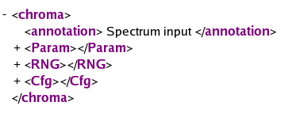
The main points of interest are in the <Param> tag. Let us look at this now. Expanding this tag in firefox I get: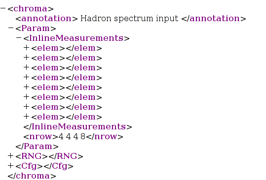
There are 2 tags at this level
Before going into details of the measurements, lets look at the <Cfg> tag. Expanding it we get: 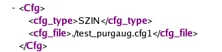
We see 2 subtags
The <Cfg> task reads the gauge field into a NamedObject. NamedObjects are similar to a little internal file system, where we can put objects to share between tasks, and refer to the by names. Initially this system was added for machines where I/O was prohibitively slow. Since their inception, NamedObjects have become prevasive and are now used outside of just measurements such as a place to put monomials in HMC. The object_id of the config specified in the <Cfg> element is default_gauge_field.
Let us now look at the elements in the <InlineMeasurements> tag. I will expand them one by one.
The first element corresponds to task of making a source (the gauge field already being handled with the <Cfg> tag.) A first level expansion of the <elem> tag is below:
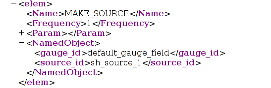
There are some fairly univeral elements here:
The above tags are generic to the measurements and I shall not repeat there discussion unless there is something distinct to be said (Usually to do with the <NamedObject> tags). Now I will concentrate on what is in the measurement specific <Param> tag. Expanding it out we get
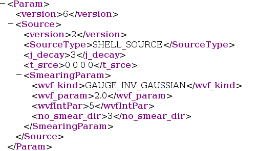
we see that there is are the following tags:
Of course the program can create more than just point sources, and it can create smeared sources with wavefunction and link smearing both at the source and the sink, however discussion of the markup for those measurements is beyond the scope of this short tutorial. The interested readers should look in the
chroma/tests/chroma/hadron/make_sourcedirectory of the chroma source tree at the various .ini.xml files.
The second <InlineMeasurement> element is used to compute a propagator. This is the conversion of the previous propagator program into an inline measurement. The propagator program itself has been deprecated.
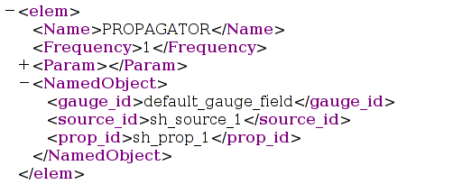
It also has <Name>, <Frequency> and <NamedObject> tags which are as before except
The measurement specific parameter tag now looks like:
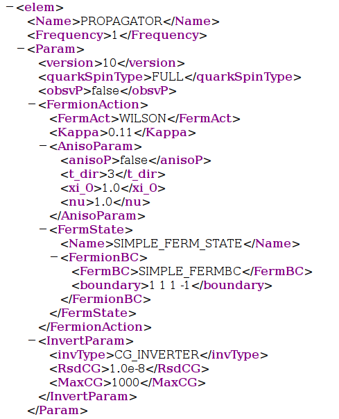
Let us look at these tags:
We do not specify a a separate XML output file for this type.
The third elemen is used to discard the source which is no longer needed. Expanding out the XML looks like:
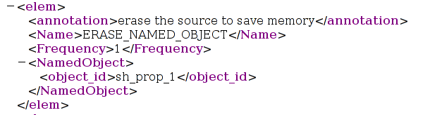
The structure should be familiar to you. The <NamedObject> section contains the ID of the named object to discard in the <object_id> tag. Apart from this the measurement has no <Param> tag.
We come to the 4th element of the inline measurements, which is the task where we save the propagator. The expanded XML looks like
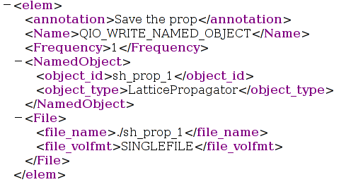
The XML structure is as usual. The name of this task is QIO_WRITE_NAMED_OBJECT to signify that we will write the object in QIO LIME format. The interesting tags are as follows
We reach the 5th of our measurements, which performs sink smearing on a prop. The XML structure is as usual, with the name SINK_SMEAR. We perform two sink smearing measurements here - one is a simple point sink (ie no smearing at all). The XML looks like this:
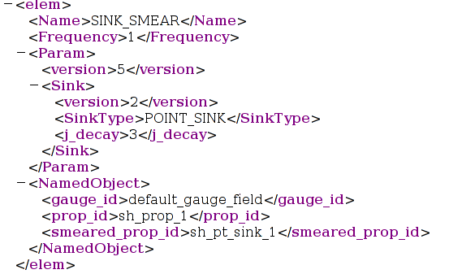
Here the <SinkType> specifies that we have a point sink. The <j_decay> denotes that we treat dimension 3 as time. The <gauge_id> denotes the input gauge field (which is not used when making a point sink) and the <prop_id> denotes tha propagator on which we are performing this trivial sink smearing. The trivially sink smeared prop (which in reality is a source smeared point sink propagator) is given the name sh_pt_sink_1 in the <smeared_prop_id> tag.
The second sink smearing task is a little more convoluted. This time we perform wavefunction smearing on the propagator to create a shell sink. The XML is like for the point sink but with an extra <SmearingParam> element which has parameters that are the same as in the MAKE_SOURCE element. The name we give to the sink smeared prop (which is actually both source and sink smeared prop) is sh_sh_sink_1. The XML is below:
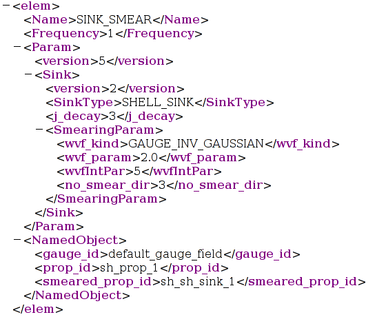
The 7th measurement is another ERASE_NAMED_OBJECT measurement that erases the un-sink-smeared prop to save some memory. It is very similar in all aspects to the first one.
Our last measurement measures basic hadron spectroscopy observables. The XML is below:
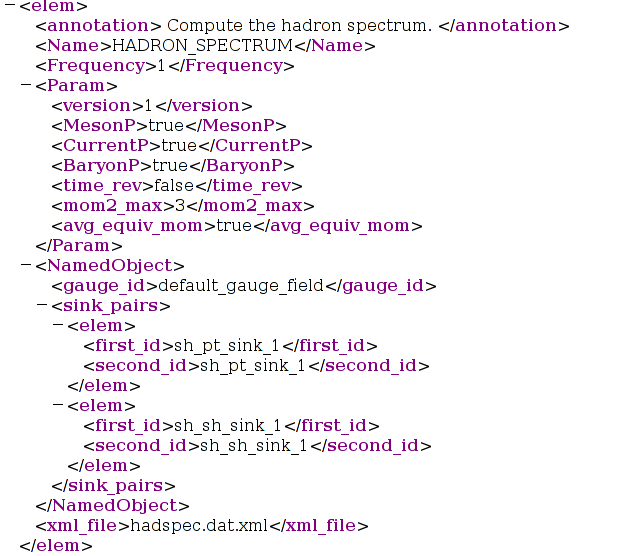
The <Param> element is as follows:The named object tag specifies the gauge field to use, and then a list of <sink_pairs>. The sink pairs contain a list of sink smeared prop pairs. These pairs refer to the sink smeared quark props to use in computing the spectroscopy. In this case, the spectroscopy correlators are computed twice. Once with smeared-point props and the second time with smeared smeared correlators.
Finally this measurement has an extra tag: <xml_file>. This tag specifies that the output from the data should be written to a separate XML file, rather than in the default output XML file. This option is available on several inline measurements (almost a de-facto standard). In this case the output is placed into a file called hadspec.dat.xml.
Now that we know what the XML file does, let us run the chroma program
./chroma -i example.ini.xml -o example.out.xml
You should see lots of output on your screen as the code runs, telling you about its progress. I have captured the standard output in this file and you should see similar things. In particular, the program should
Have a look at the example.out.xml file. This will look awfully long and complicated. My one is here. However, the power of the firefox XML browser allows me to compress it. The toplevel view then looks as follows:
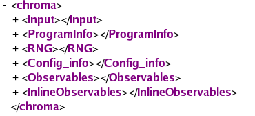
The tags containg the following information:
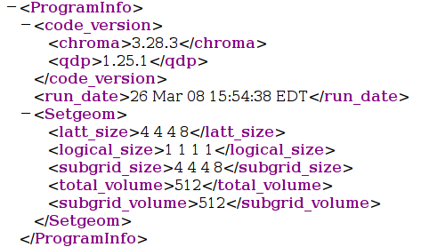
Firstly it gives the version numbers of the code used (both for chroma and qdp). Secondly it tries to record providing the system sports a working date function. Finally it provides information on the geometry used in the problem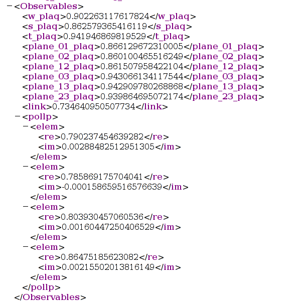
They are: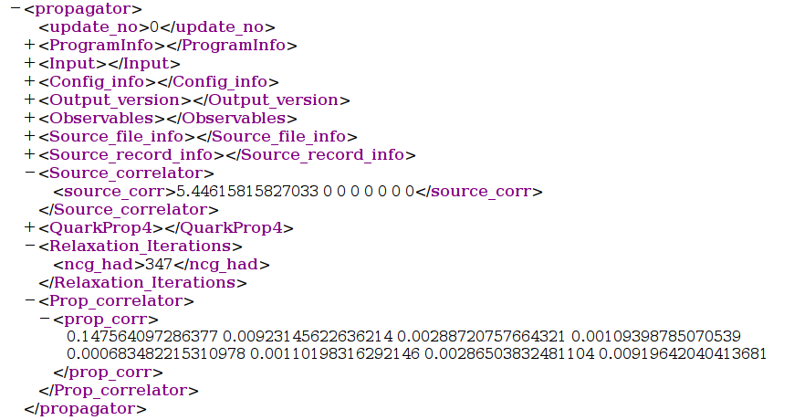
Apart from repeating everything again about the input and the program etc we are also given the pion correlator constructed from the source in <Source_correlator> - we can see that we used a smeared source - had we used a Dirac Delta for each of the 12 components the first element of the <source_corr> would be 12 (one for each spin color component). We are also given the timesliced zero momentum pion correlator in the <prop_corr> tag within the <Prop_correlator> group. The total number of iterations is given in the <ncg_had> tag within the <Relaxation_iterations> group. Finally expanding the <QuarkProp4> tag we get the individual per component CG iteration counts and attained relative residua: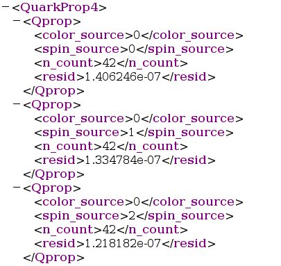
The last element of the output from inline measurements is the output from the spectroscopy measurement. It is simply:
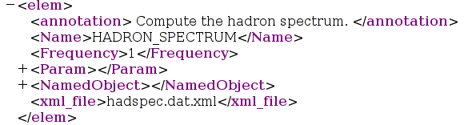
thus indicating that we redirected the output to the hadspec.dat.xml file.
The output file hadspec.dat.xml is now rather large, as all the spectrum computations have been dumped into it. Skipping the informational tags (such as the echoing of the input and the information gleaned from gauge configs we get to the results <Wilson_hadron_measurements> tag.
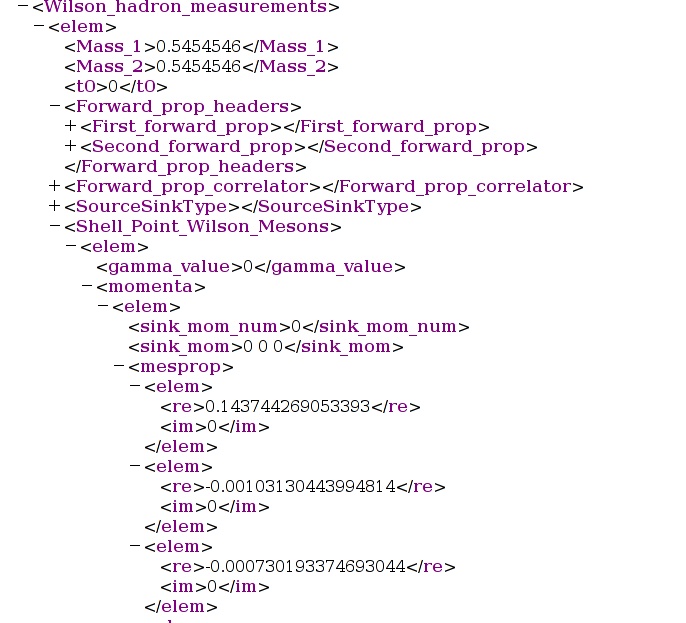
This tag consists of a series of <elem> tags, one for each <sink_pair> we specified in the HADRON_SPECTRUM measurement. The <Mass_1> and <Mass_2> tags reveal the masses used for the propagators that are correlated and <t0> shows the time coordinate of the source. There is also information gleaned from the headers of the propagators as well as from the sink smearings. There after come the correlations themselves these in this case live in parent tags such as:
The meson tags are relatively easy to understand. The structure is as follows:
# gamma( 1) # ( 0001 ) --> 1
# gamma( 2) # ( 0010 ) --> 2
# gamma( 3) # ( 0100 ) --> 4
# gamma( 4) # ( 1000 ) --> 8
The way we do mesons is enumerate the possible gamma matrix products
Gamma = gamma_1^n1 * gamma_2^n2 * gamma_3^n3 * gamma_4^n4where n_i are single bit fields. Since gamma_1 comes first the bit for it must come first. So, then, for example,
Clearly at this stage of the game it becomes difficult to deal with the XML files just by looking at them in an editor, and some form of data binding would be useful. Or just like in the SZIN case, we can strip the data out of the XML file into individual files for each correlation function.
The task of stripping the data has been delegated to data analysis. There is a software package called ADAT which was written to sllow this kind of thing. It contains stripping programs for many of the interesting output formats in chroma such as spectroscopy and some 3 point functions. For this exercise we will use the strip_hadspec program.
In this section we will check out the adat software package from CVS and build the strip_hadspec application. If you don't have CVS installed or want to skip this section you can go on to the next bit using the copy of adat this copy of strip_hadspec (Linux Ubuntu 6.06).
Check out the ADAT pacakge from the anonymous CVS by typing the following commands (I assume you are using the bash shell)
export CVSROOT=:pserver:anonymous@cvs.jlab.org:/group/lattice/cvsroot export CVS_RSH=sshthis will check out the source code for adat into a directory called adat in your working directory. To build the adat library simply enter the adat directroy
cvs login (hit return when asked for password)
cvs checkout adat
cd adatand configure and make the package as you would with qdp++ and chroma. As long as libxml is installed in a system location, you don't need options to configure.
./configureOnce the library has been built, you'll nedd to make the actual stripper. From the adat directory go to the
make
cd main/strippersand make the spectrum stripper program
make strip_hadspecYou should at this point have the stripping program compiled in the directory you are in. Copy it back to your main working directory (eg tut1)
You should now have a copy of the strip_hadspec program in your working directory. Stripping out the XML will generate lots of little files, one for each correlator in each channel. So it is useful to make a separate directory for this, and copy the strip_hadspec and the hadspec.dat.xml into it. From your working directory:
mkdir strip
cp strip_hadspec hadspec.dat.xml strip cd strip
Now run the stripper with:
./strip_hadspec hadspec.dat.xmland you should get output like this.
Doing an ls now should reveal that you have LOADS of files such as:
pion.D5455.DG2_1.DG2_1.SS pion_px1_py1_pz0.D5455.DG2_1.DG2_1.SS
pion.D5455.DG2_1.P_1.SP pion_px1_py1_pz0.D5455.DG2_1.P_1.SP
pion.D5455.DG2_2.DG2_2.SS pion_px1_py1_pz0.D5455.DG2_2.DG2_2.SS
pion.D5455.DG2_2.P_2.SP pion_px1_py1_pz0.D5455.DG2_2.P_2.SP
pion_px1_py0_pz0.D5455.DG2_1.DG2_1.SS pion_px1_py1_pz1.D5455.DG2_1.DG2_1.SS
pion_px1_py0_pz0.D5455.DG2_1.P_1.SP pion_px1_py1_pz1.D5455.DG2_1.P_1.SP
pion_px1_py0_pz0.D5455.DG2_2.DG2_2.SS pion_px1_py1_pz1.D5455.DG2_2.DG2_2.SS
pion_px1_py0_pz0.D5455.DG2_2.P_2.SP pion_px1_py1_pz1.D5455.DG2_2.P_2.SP
The naming scheme is relatively straightforward:
channel_[momenta].D[MassString].D[SourceSmear_Channel].D[SinkSmear_Channel].[Smearing]
pion.D5455.DG2_1.P_1.SPHave a look at this file. It should look like:
1 8 1 4 1 0 0.147564 0The first line is a header. The digits are as follows:
1 0.00923146 0
2 0.00288721 0
3 0.00109399 0
4 0.000683482 0
5 0.00110198 0
6 0.00286504 0
7 0.00919642 0
t C(t)where C(t) is written as real and imaginary parts. For pions the imaginary parts are 0. You should check that the values of the correlation function match up with the <prop_corr> tag near the end of the example.out.xml file.
In this example we used only one config, so there are only 8 lines. We can simulate the effect of having multiple configs by using 1 config twice. Try running strip_hadspec with the following command
./strip_hadspec hadspec.dat.xml hadspec.dat.xml
Now the pion correlator should look like:
2 8 1 4 1The first line now reflects that the file contains 2 correlators, and you can see the correlation function repeated twice below.
0 0.147564 0
1 0.00923146 0
2 0.00288721 0
3 0.00109399 0
4 0.000683482 0
5 0.00110198 0
6 0.00286504 0
7 0.00919642 0
0 0.147564 0
1 0.00923146 0
2 0.00288721 0
3 0.00109399 0
4 0.000683482 0
5 0.00110198 0
6 0.00286504 0
7 0.00919642 0
mkdir stripped; cd stripped
mv ../strip_hadspec .
./strip_hadspec ../XML_FILE_1 ../XML_FILE_2